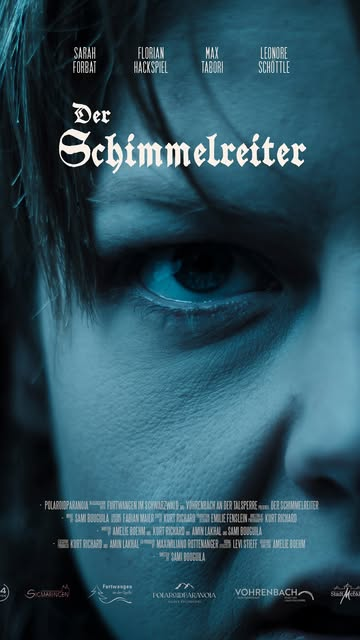
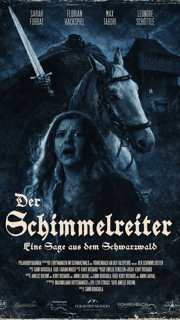
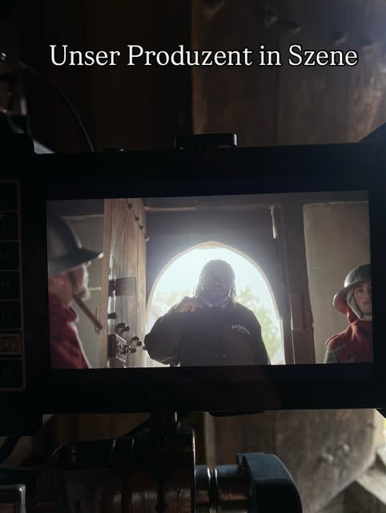
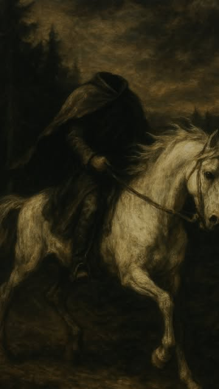
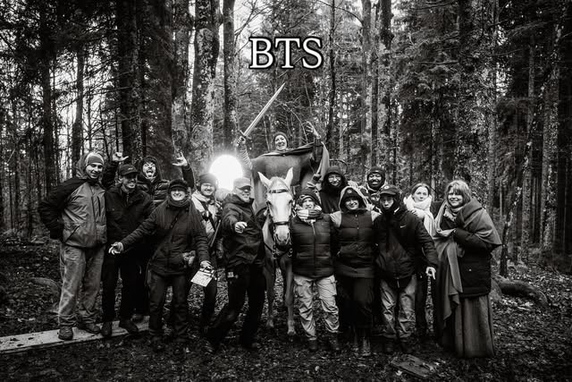
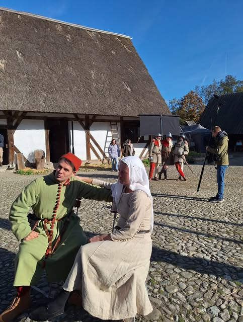
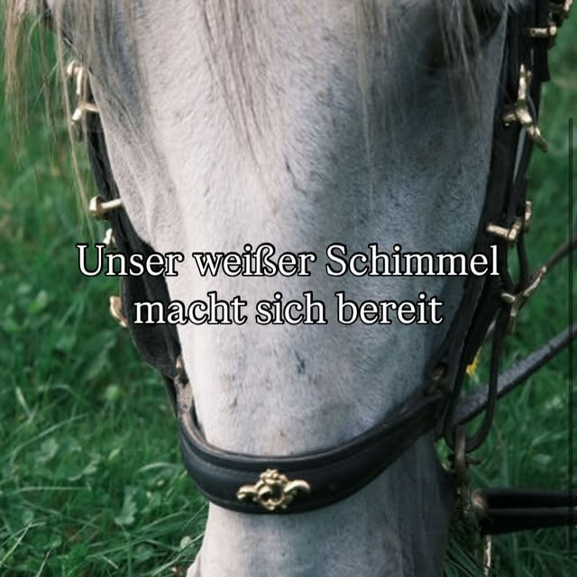

Moodboard – Visuelle Inspiration für Stimmung, Farben & Stil
Neuigkeiten, Drehtage und Einblicke – folgt uns auf @schwarzwaldsageschimmelreiter.

▶ ReelReel: Der Schimmelreiter – Teaser
▶ ReelReel: Filmplakat Der Schimmelreiter
Unser Produzent in Szene
▶ ReelReel: Der Schimmelreiter
Behind the Scenes – das Team am Set
Drehtag in historischen Kostümen
Unser weißer Schimmel macht sich bereit